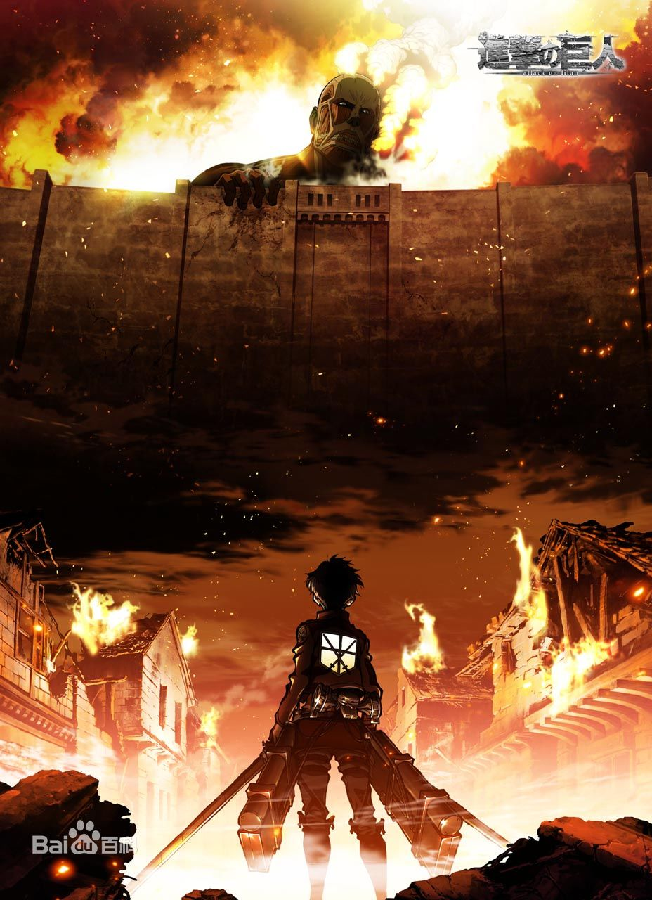

进击的巨人
（WIT STUDIO制作的电视动画）
《进击的巨人》是根据日本漫画家谏山创的漫画作品所改编的同名动画作品。主要讲述高墙内的人类为了生存而对抗巨人的故事。
动画由WIT STUDIO负责制作，2012年10月发布动画化的消息，第一季于2013年4月6日开始在MBS上播放,至2013年9月29日完结，总共26话（包含1集回顾篇），改编自原作漫画前33话。官方后续推出了2集OAD。
故事简介
107年前（743）年，世界上突然出现了人类的天敌“巨人”，面临着生存危机而残存下来的人类逃到了一个地方，盖起了三重巨大的城墙。人们以自由为代价，在这隔绝的环境里享受了一百多年的和平，直到艾伦·耶格尔十岁那年，50米高的“超大型巨人”突然出现，以压倒性的力量破坏城门，其后瞬间消失，巨人们成群的冲进墙内捕食人类。
艾伦亲眼看着人们以及自己的母亲被巨人吞食，怀着对巨人无法形容的憎恨，誓言杀死全部巨人。城墙崩坏的两年后，艾伦加入104期训练兵团学习和巨人战斗的技术。在训练兵团的三年，艾伦在同期训练兵里有着其他人无法比拟的强悍精神力，即使亲眼见过地狱也依然勇敢地向巨人挑战的艾伦，如愿以偿加入了向往已久的调查兵团。
获奖记录
2013年10月，《进击的巨人》荣获第18届神户动画奖最佳电视动画动画作品，片头曲《红莲之弓矢》获最佳动画主题曲。
2013年10月，Linked Horizon为TV版《进击的巨人》创作的主题曲《红莲之弓矢》以及《自由之翼》，再加上于音乐配信中罕见的《红莲之弓矢（TV.SIZE版）》这三首曲子分别在PC配信类别中下载量超过了10万，并且获得了日本唱片协会发表的8月度·9月度音乐配信金曲认证。
2013年10月，日本知名动画杂志《Newtype》主办的年度动画评奖活动“Newtype Anime Awards 2013”中《进击的巨人》一举揽获监督赏(荒木哲郎)、脚本赏(小林靖子)、原声赏、制作公司赏（WIT STUDIO）、主题曲赏（红莲的弓矢）、女性角色赏（三笠·阿克曼）、电视动画作品赏7项大奖，堪称本次活动的最大赢家。
动画反响
动画《进击的巨人》在2013年度获得了极高的人气，但高达之父富野由悠季认为，用作品来表现如此的世界是他绝对无法认同的地方，还表示作者只是用这样的作品来释放自己的愤怒。
2013年《进击的巨人》自开播以来，就吸引了大批动漫迷。爱奇艺购得其在国内的版权，成为独家播放这部作品的平台。截至2014年9月，这一平台的总播放量已经突破了4.4亿。
由于我国暂时没有实行电影电视分级制度，片中的血腥暴力画面引发不少观众的热议，有的家长认为该影片不适合儿童观看。[10] 据了解，在日本，《进击的巨人》播出时段属于深夜档，按日本现行电影电视分级制度该片属于R-15，即不适合十五岁以下的儿童观看，因此中国的网络视频播放方爱奇艺为此删除了剧中大量血腥暴力画面。